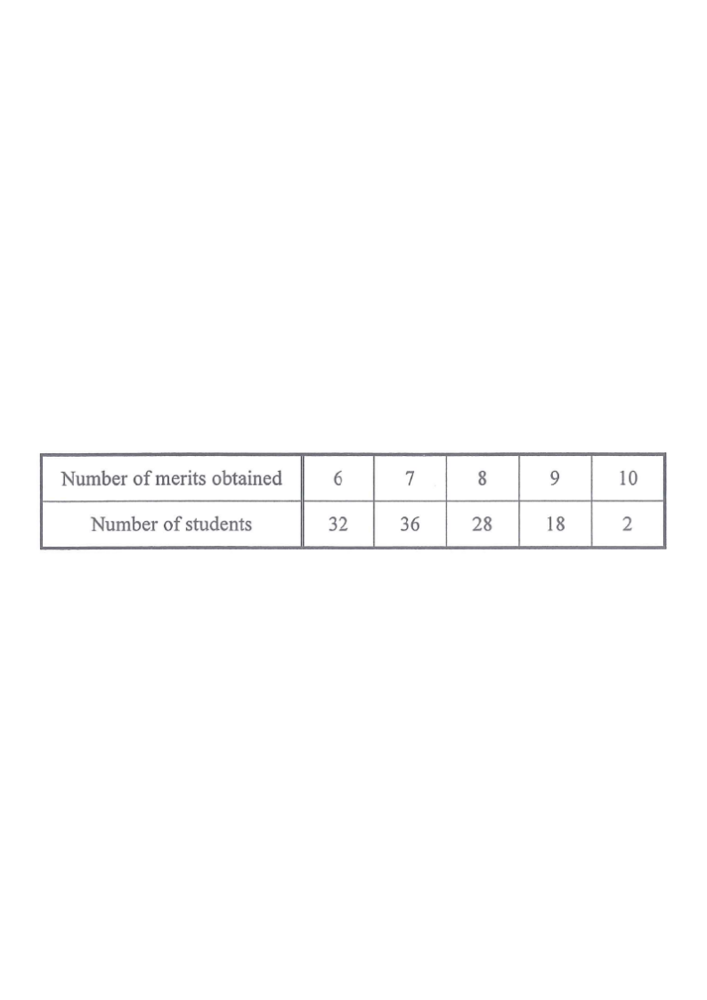

Merits (score)Frequency (students)Quartile / median positionMode / highlighted value
HKDSE 2019 Paper 2 · Q30
15. Statistics
The table below shows the distribution of the numbers of merits obtained by some students in a year.
Number of merits obtained
6
7
8
9
10
Number of students
32
36
28
18
2
Which of the following is true?
A. The mode of the distribution is 36.
B. The median of the distribution is 8. (answer)
C. The lower quartile of the distribution is 6.
D. The upper quartile of the distribution is 10.

Figure (original exam diagram)
STEP 1Total number of data (students)
$N = 32 + 36 + 28 + 18 + 2 = \mathbf{116}$
Add all frequencies — this tells you which positions are the median and quartiles.
STEP 2Find the mode (check A)
The largest frequency is $36$, which corresponds to the number of merits $7$.
So the mode is 7, not 36. Option A is false.
The mode is the data value, not the frequency itself.
STEP 3Median position
For $N=116$ (even), the median is the mean of the $\tfrac{116}{2}=58$th and $59$th ordered data.
Having $32$ students with $6$ and $36$ with $7$, the $58$th and $59$th both fall in the group of $7$.
Median $= (7+7)\div 2 = \mathbf{7}$, not 8. Option B is false.
Locate the cumulative frequencies to see which value the middle positions land on.
Median of an Even Number of Data\(N=116\ \Longrightarrow\ \text{median}=\dfrac{x_{58}+x_{59}}{2}\)The \(58\)th and \(59\)th students both obtained \(7\) merits, so the median is \(7\).
STEP 4Lower quartile (check C)
Lower quartile position: $\tfrac{116}{4}=29$th and $30$th ordered data.
Both the $29$th and $30$th data values are $6$ (since the first $32$ students obtained $6$ merits).
$Q_1 = (6+6)\div 2 = \mathbf{6}$. Option C is true.
The first 32 students all scored 6, so positions 1–32 are all 6.
Position of the Lower Quartile\(Q_{1}=\text{the }\dfrac{N}{4}\text{th value (averaged with the next one)}\)\(\dfrac{116}{4}=29\), and positions \(29\) and \(30\) are both \(6\) merits, so \(Q_{1}=6\).
STEP 5Upper quartile (check D)
Upper quartile position: $\tfrac{3\times116}{4}=87$th and $88$th ordered data.
Cumulative: $32+36+28+18=114$ students scored up to $9$. So the $87$th and $88$th data are $8$.
$Q_3=(8+8)\div 2=\mathbf{8}$, not 10. Option D is false.
Cumulative up to 8: 96; cumulative up to 9: 114. So positions 87, 88 are in the "8" group.
Answer: C — The lower quartile of the distribution is 6.
PRACTICESimilar question — try it yourself
Question. The table below shows the distribution of the numbers of merits obtained by \(100\) students. Numbers of merits: \(6,\ 7,\ 8,\ 9,\ 10\); numbers of students: \(20,\ 30,\ 25,\ 20,\ 5\). Which of the following is true? A. The mode of the distribution is \(30\). B. The median of the distribution is \(7.5\). C. The lower quartile of the distribution is \(6\). D. The upper quartile of the distribution is \(9\).
Show the worked solution
Step 1. \(N=20+30+25+20+5=100\). The cumulative frequencies are \(20,\ 50,\ 75,\ 95,\ 100\).
Step 2. A: the largest frequency is \(30\), for \(7\) merits, so the mode is \(7\), not \(30\). A is false.
Step 3. B: with \(N=100\) the median is the mean of the \(50\)th and \(51\)st values. The \(50\)th is \(7\) and the \(51\)st is \(8\), so the median is \(7.5\). B is true.
Step 4. C: \(\dfrac{100}{4}=25\), and the \(25\)th and \(26\)th values are both \(7\), so \(Q_{1}=7\neq6\). C is false.
Step 5. D: the \(75\)th value is \(8\) and the \(76\)th is \(9\), so \(Q_{3}=8.5\neq9\). D is false. Hence only B is true.